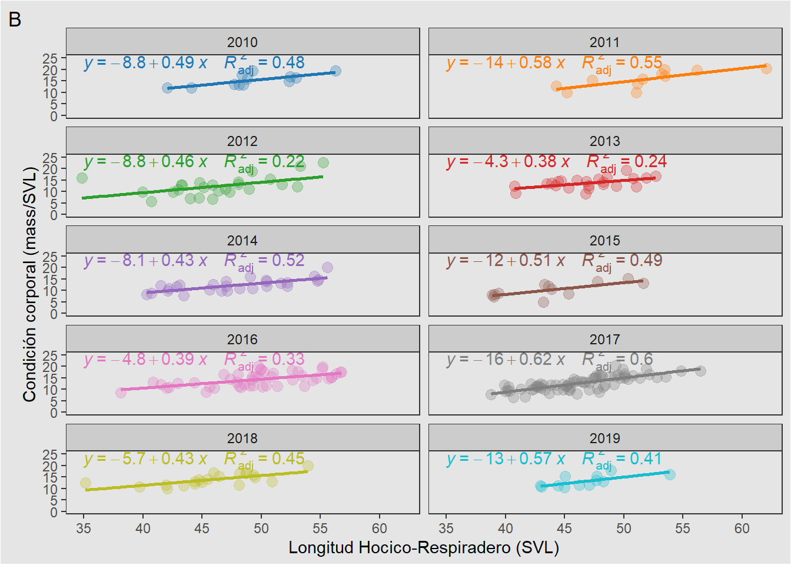
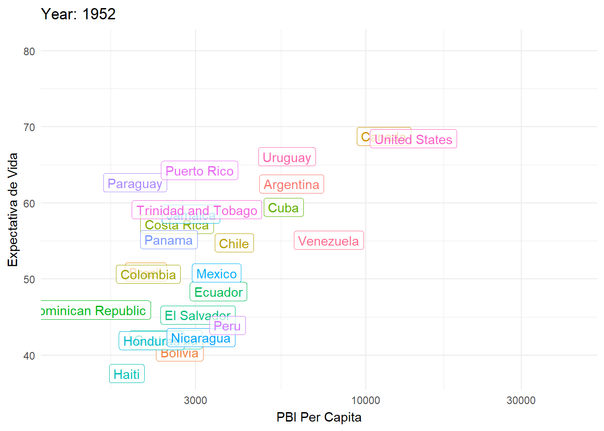
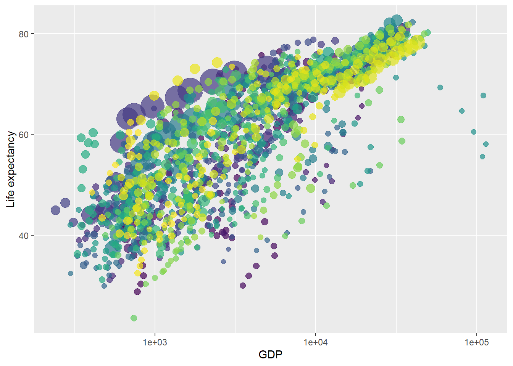
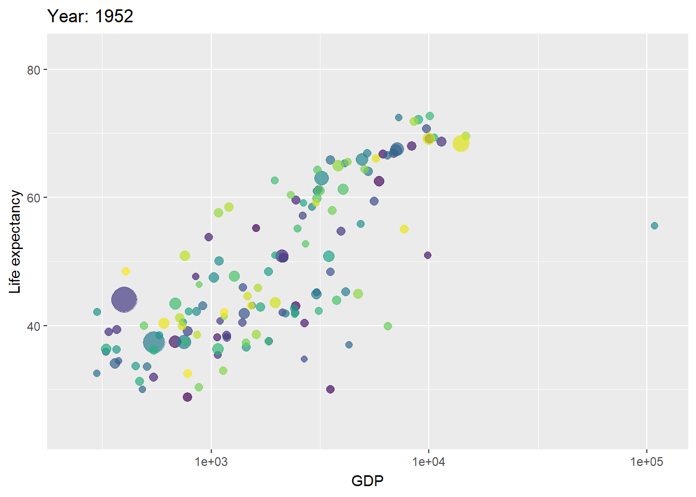
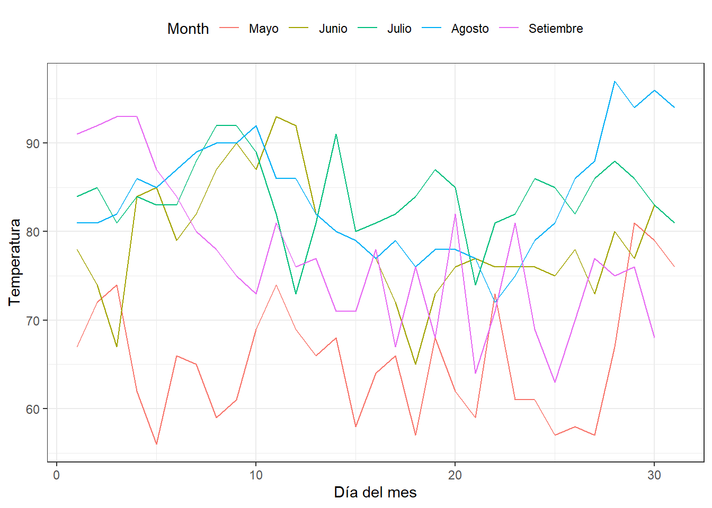
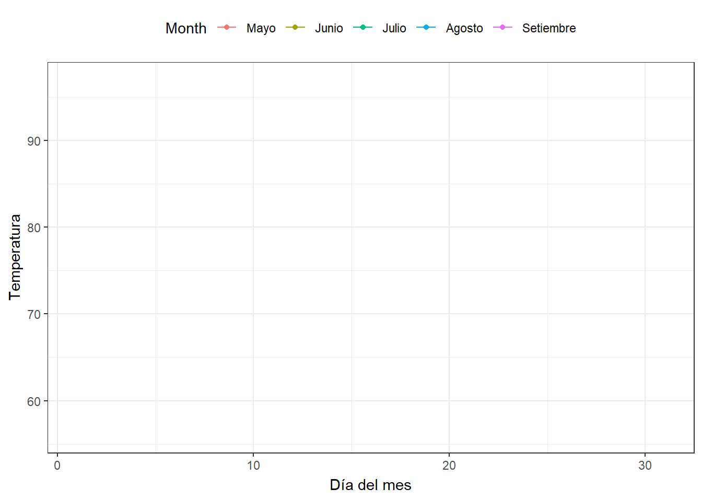

install.packages("devtools")
devtools::install_github("thomasp85/gganimate")
install.packages("magick")
install.packages("patchwork")
install.packages("rstantools")
install.packages("gifski")
install.packages("gapminder")Gráficos estadísticos avanzados con ggplot2 - gganimate
Instalar librerías nuevas
Librerías a usar
library(tidyverse)
library(gganimate)
library(magick)
library(gapminder)
library(patchwork)1. Generando cuatro gráficos para trabajar con ellos
Lectura de base de datos. Descarga la base de datos en: Documento excel
DF <- openxlsx::read.xlsx("multiplicata_fvs_choice_updated2020.xlsx")A <- DF %>%
filter(!yr_collected %in% 2007:2009) %>%
ggplot(aes(x=svl_hi, y=mass_hi))+
geom_point(size=3, alpha=0.3, color="coral")+
facet_wrap(~yr_collected, ncol=2)+
labs(x="Longitud Hocico-Respiradero (SVL)",
y="Condición corporal (mass/SVL)",
tag="A")+
ggpubr::stat_cor(aes(label = paste(..r.label..,
..p.label..,
sep = "~")),
color = "black", geom = "text",
label.x = 35, label.y = 20, size=3.5)+
theme_test()+
theme(legend.position="none",
plot.background=element_rect(fill="gray90"),
panel.background=element_rect(fill="gray90"),
strip.background=element_rect(fill="gray80"))
AWarning: Removed 3 rows containing non-finite values (stat_cor).Warning: Removed 3 rows containing missing values (geom_point).
B <- DF %>%
filter(!yr_collected %in% 2007:2009) %>%
ggplot(aes(x=svl_hi, y=mass_hi, color=factor(yr_collected)))+
geom_smooth(method="lm", se=FALSE)+
geom_point(size=3, alpha=0.3)+
facet_wrap(~yr_collected, ncol=2)+
ggpubr::stat_regline_equation(label.x = 35, label.y = 23,
aes(label = paste(..eq.label..,
..adj.rr.label..,
sep = "~~~~")))+
scale_y_continuous(limits=c(0,25))+
scale_x_continuous(breaks=seq(0,60,5))+
ggthemes::scale_color_tableau(palette="Classic 10")+
labs(x="Longitud Hocico-Respiradero (SVL)",
y="Condición corporal (mass/SVL)",
tag="B")+
theme_test()+
theme(legend.position="none",
plot.background=element_rect(fill="gray90"),
panel.background=element_rect(fill="gray90"),
strip.background=element_rect(fill="gray80"))
B`geom_smooth()` using formula 'y ~ x'Warning: Removed 3 rows containing non-finite values (stat_smooth).Warning: Removed 3 rows containing non-finite values (stat_regline_equation).Warning: Removed 3 rows containing missing values (geom_point).
C <- iris %>%
ggplot(aes(Petal.Length, Sepal.Length))+
geom_point()
D <- iris %>%
ggplot(aes(Petal.Length, Species))+
geom_boxplot()2. Gráficos animados con gganimate
# Creemos un gráfico estático
Grafico <- gapminder %>% filter(continent=="Americas") %>%
ggplot(aes(gdpPercap, lifeExp, label=country, colour=country)) +
geom_label(alpha=0.7)+
scale_x_log10() +
scale_size(range = c(3, 15))+
theme_minimal()+
theme(legend.position="none")
# Creemos un gráfico animado
Grafico <- Grafico +
labs(title="Year: {frame_time}",
x="PBI Per Capita", y="Expectativa de Vida")+
transition_time(year)
Grafico
2.1. Transiciones temporales en gráficos de dispersión de puntos
# Creemos un gráfico estático
library(gapminder)
p <- gapminder %>%
ggplot(aes(x = gdpPercap, y=lifeExp,
size = pop, colour = country)) +
geom_point(show.legend = FALSE, alpha = 0.7) +
labs(x = "GDP", y = "Life expectancy")+
scale_color_viridis_d() +
scale_size(range = c(2, 12)) +
scale_x_log10()
p
# Transición por variable year
p + transition_time(year) +
labs(title = "Year: {frame_time}")
# Transición por variable year y con faceta por continent
p + facet_wrap(~continent) +
transition_time(year) +
labs(title = "Year: {frame_time}")
# Transición por variable year y seguimiento activo de los datos
p + transition_time(year) +
labs(title = "Year: {frame_time}") +
view_follow(fixed_y = TRUE)
# Transición por variable year y movimiento con sombras móviles
p + transition_time(year) +
labs(title = "Year: {frame_time}") +
shadow_wake(wake_length = 0.1, alpha = FALSE)
# Transición por variable year y movimiento con sombras fijas
p + transition_time(year) +
labs(title = "Year: {frame_time}") +
shadow_mark(alpha = 0.3, size = 0.5)
2.2. Transiciones temporales en gráficos de líneas
# Creemos un gráfico de lineas simple
Z <- airquality %>%
mutate(Month = factor(Month, labels=c("5"="Mayo","6"="Junio","7"="Julio",
"8"="Agosto","9"="Setiembre"))) %>% ggplot(aes(x=Day, y=Temp, color=Month))+
geom_line() +
labs(x = "Día del mes", y = "Temperatura") +
theme_bw()+
theme(legend.position = "top")
Z
# Transición de las líneas con revelado en base al eje x
Z + transition_reveal(Day)geom_path: Each group consists of only one observation. Do you need to adjust
the group aesthetic?
geom_path: Each group consists of only one observation. Do you need to adjust
the group aesthetic?# Transición de las líneas guiadas por punto,
# con revelado en base al eje x
Z +
geom_point() +
transition_reveal(Day)geom_path: Each group consists of only one observation. Do you need to adjust
the group aesthetic?
geom_path: Each group consists of only one observation. Do you need to adjust
the group aesthetic?# Transición de las líneas y punto,
# con revelado en base al eje x
Z +
geom_point(aes(group = seq_along(Day))) +
transition_reveal(Day)geom_path: Each group consists of only one observation. Do you need to adjust
the group aesthetic?
geom_path: Each group consists of only one observation. Do you need to adjust
the group aesthetic?
2.3. Exportando GIFs animados en alta calidad
# Se debe guardar el gráfico animado final en un objeto
Final <- Z + transition_reveal(Day)
# Generemos la animación
animate(Final, renderer=magick_renderer(),
width = 20, height = 20, units="cm", res=150)
# Exportemos la animación activa en el Visualizador (Panel Viewer)
anim_save("mi animacion lines.gif")